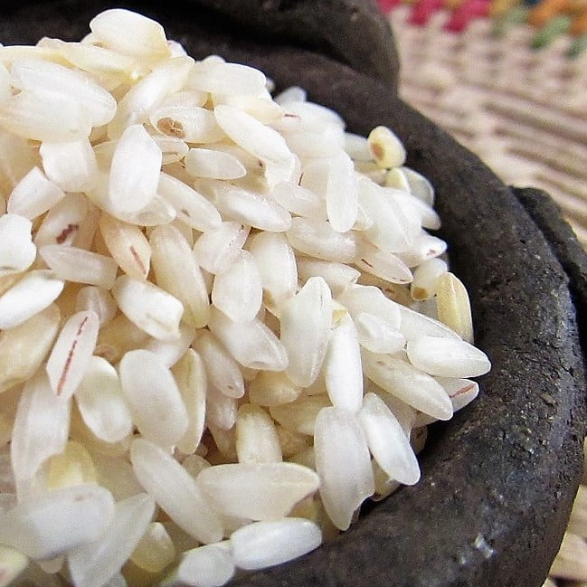
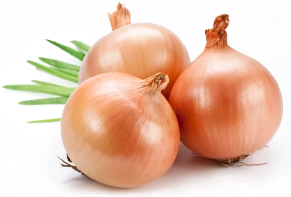
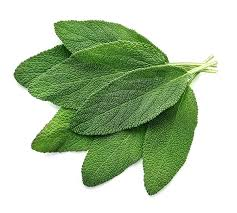
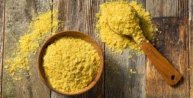
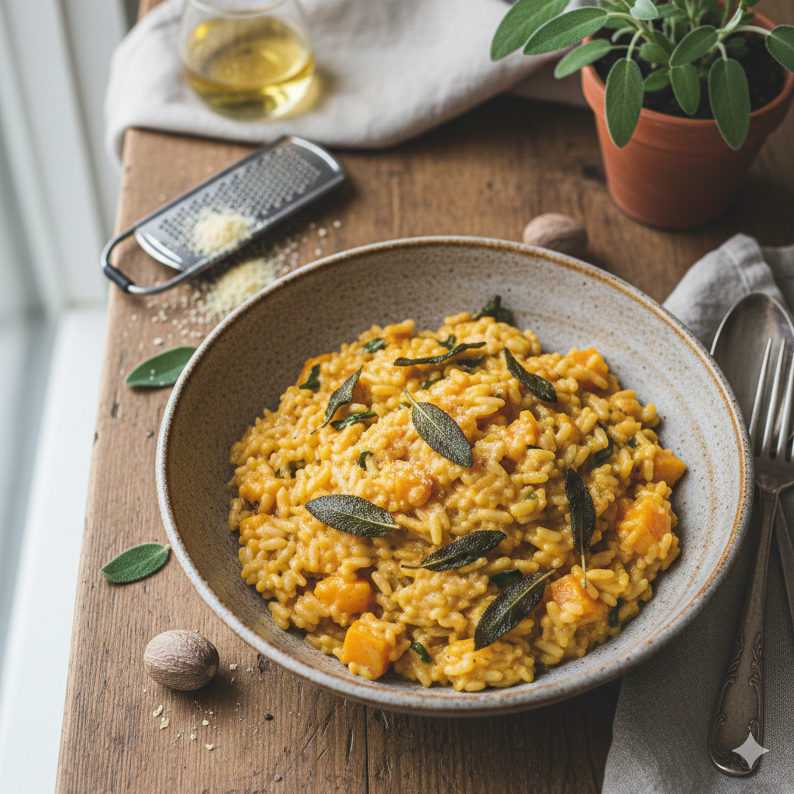

Risoto de Abóbora com Sálvia
O encontro da cremosidade da abóbora cabotiá com o aroma inconfundível da sálvia fresca. Um prato sofisticado e reconfortante.
Ingredientes:
-

1 e 1/2 xícara de arroz arbóreo (próprio para risoto). - 400g de abóbora cabotiá (metade em cubos pequenos e metade em purê).
-

1 cebola branca bem picadinha -
 1/2 xícara de vinho branco seco
1/2 xícara de vinho branco seco
- 1,5 litro de caldo de legumes caseiro (mantenha-o quente ao lado da panela).
-

1 maço de sálvia fresca. -
 3 colheres de sopa de azeite de oliva extra virgem.
3 colheres de sopa de azeite de oliva extra virgem.
-

2 colheres de sopa de levedura nutricional (para o sabor umami e queijoso). -
 Sal e pimenta-do-reino a gosto.
Sal e pimenta-do-reino a gosto.
- Opcional: Noz-moscada ralada na hora.

Modo de Preparo
- Asse os cubos de abóbora com um fio de azeite e sal até ficarem macios. Amasse metade para formar um purê rústico e reserve a outra metade em cubos inteiros para dar textura ao prato final.
- Em uma frigideira pequena, aqueça um pouco de azeite e frite rapidamente algumas folhas de sálvia até ficarem crocantes. Reserve sobre papel toalha. Esse será o seu topping principal.
- Refogue a cebola no azeite até ficar translúcida. Adicione o arroz e "toste" levemente por 2 minutos. Despeje o vinho branco e mexa até evaporar completamente.
- Adicione o caldo de legumes quente, uma concha por vez, mexendo sempre. O segredo da cremosidade vegana é o movimento constante, que libera o amido do arroz. Na metade do cozimento, incorpore o purê de abóbora.
- Quando o arroz estiver al dente, desligue o fogo. Adicione os cubos de abóbora assados, a levedura nutricional, um fio generoso de azeite e sálvia fresca picada. Tampe a panela por 2 minutos para os sabores descansarem.